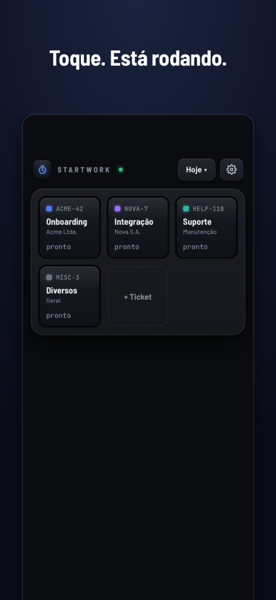
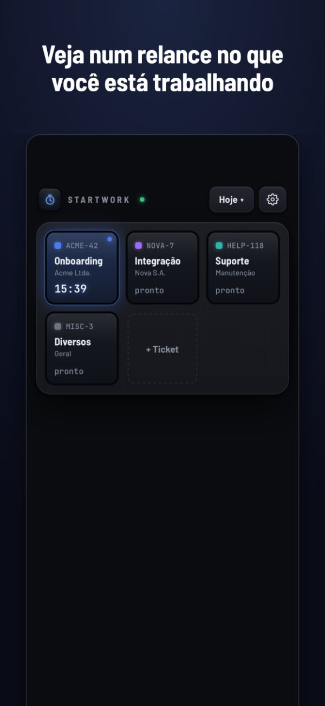
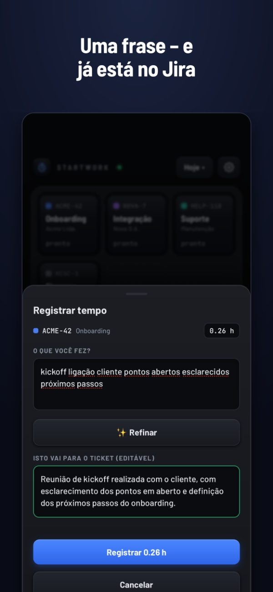
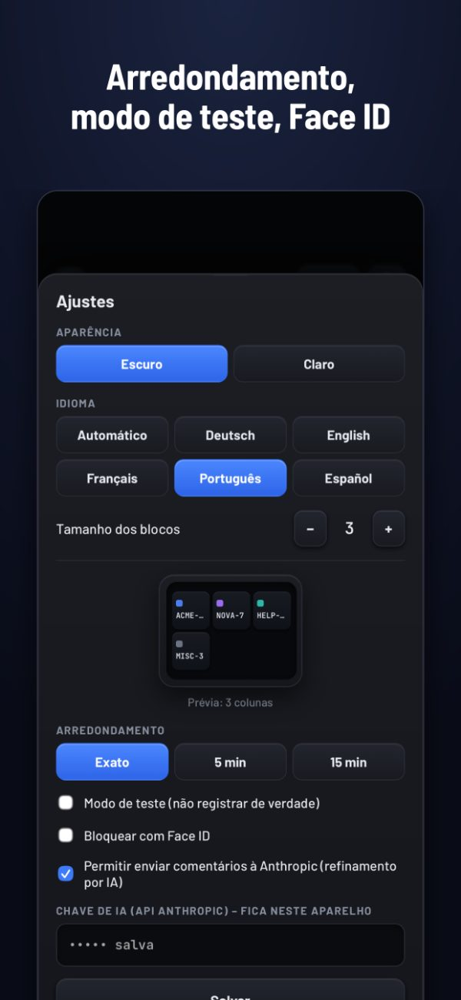

StartWork
Horas no Jira sem complicação
Toque num bloco – o relógio corre. Toque de novo, descreva em uma frase o que você fez – está no Jira. Sem conta, sem nuvem, nada para aprovar.
Compra única · sem assinatura · iPhone




Sem conta, sem nuvem
O StartWork roda no seu iPhone. Não temos servidor e não há cadastro. Suas horas vão direto para o seu próprio Jira – e para nenhum outro lugar.
Pague uma vez
Uma compra. Sem assinatura, sem anúncios, sem coleta de dados, sem custos posteriores.
Para quem cobra por hora
Consultores, freelancers e agências: registre no momento em que troca de tarefa, não de memória na sexta-feira.
O que ele faz
- Blocos para seus tickets de sempre, com título buscado no Jira
- Adicione tickets pela chave ou colando um link do Jira
- Arredondamento para 5 ou 15 minutos, se sua empresa quiser
- Modo de teste: veja o que seria registrado antes de registrar de verdade
- Notificação enquanto um relógio corre, para você não esquecer
- Bloqueio com Face ID – um token do Jira fica no aparelho
- Relatório do dia para compartilhar, e os dias anteriores para a daily
- Opcional: refinar comentários para o cliente com IA, usando sua própria chave da Anthropic e só após consentimento expresso
Antes de comprar
O StartWork precisa de uma instância Jira na qual você possa entrar com seu próprio token. Jira Cloud, Server e Data Center são compatíveis.
As horas são gravadas como registro de trabalho padrão do Jira. Se sua empresa usa o Tempo com campos obrigatórios (“Work Attributes”), eles ficam vazios.
Perguntas
Como registro horas no Jira pelo iPhone?
Instale o StartWork, informe uma vez o endereço do seu Jira e um token de API e adicione seus tickets como blocos. Toque num bloco para iniciar o relógio, toque de novo para parar, escreva uma frase – o StartWork grava como registro de trabalho no ticket.
Funciona com o Tempo?
Sim. O StartWork grava registros de trabalho padrão do Jira, que o Tempo lê. Campos obrigatórios do Tempo (“Work Attributes”) não são preenchidos.
Quais versões do Jira são compatíveis?
Jira Cloud (login com e-mail e token de API) e também Jira Server e Data Center (token de acesso pessoal).
O que acontece com meus dados?
Eles ficam no seu iPhone e vão apenas para o seu próprio Jira. Sem análises, sem rastreamento, sem conta conosco.
É uma assinatura?
Não. Você paga uma vez na App Store.